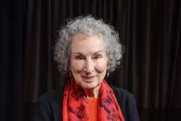

Autor
texto
Sobre a Autora
Margaret Atwood é uma escritora canadense com reconhecimento internacional, recebendo inúmeros reconhecimentos internacionais e especialmente em seu país, onde recebeu a Ordem do Canadá uma das principais condecorações do país. Desde 1976 Margaret é membro fundador do Writers's Trust of Canada uma organização não governamental de apoio a escritores canadenses ou pessoas em geral que residem no país.
Nascida na cidade de Ottawa na província de Ontário, Margaret graças as pesquisa sobre a etimologia de florestas de seu pai, passou grande parte da sua infância nas florestas do Norte Quebec, entrenado na escola somente na 8ª Série, trollando-se uma leitora insaciável de histórias em quadrinhos e conto de fadas dos irmãos Grimm, escrevendo seu primeiro livro aos 6 anos de idade.
texto
texto
Nome: Margaret Eleanor Atwood
Nascimento: 18 de novembro de 1939
Nascionalidade: Canadense
Obra-Prima: O Contod de Aia
Margaret já discutiu em entrevista que seu livro O conto de Aia não se trata de uma ficção científica assim como a maioria das pessoas o consideram, mas afirma que prefere que sua obra seja considerada uma ficção especulativa, pois de acordo com ela essa é uma realidade possível e não algo imaginário, para margaret O conto de Aia já é algo real e que vem acontecendo em nosso planeta.
Contexto da criação de O conto de Aia
Em um contexto geral o livro O conto de Aia foi escrito em meados dos anos 80 quando acontecia a guerra fria com riscos nucleares e uma corrida armamentista entre os Estados Unidos e a antiga união soviética explicando assim o contexto do livro trazendo uma infertilidade por conta de guerras e bombas nucleares.
Margaret afirma que não há nada no livro que não seja inspirado em algum acontecimento ou especulações reais como por exemplos fanáticos religiosos ou um governo totalmente autoritário tirando direitos humanos básicos como com quem se casar ou como se vestir, citado por ela por exemplo a cultura do Islamismo, outra ocasião também citada por Margaret é o nazismo com a proibição de protestos, manifestações de opinião e retalhação de pessoas contrarias ao regime.